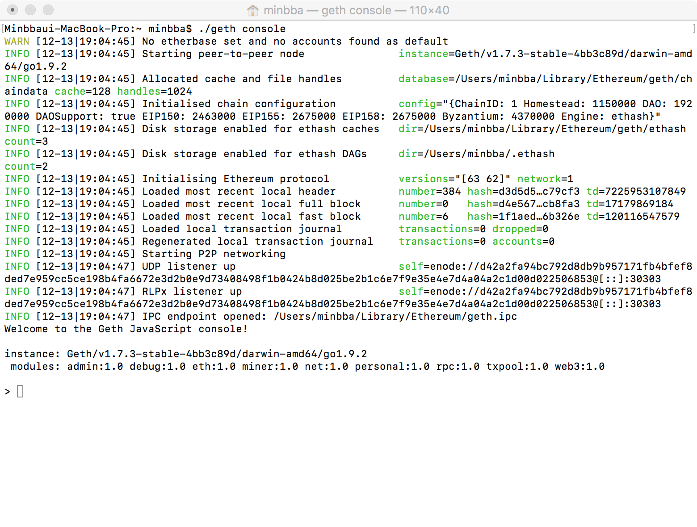

- Geth Private network 접속
- Dapp 환경설정
콘솔에 아래와 같이 입력하여 Private network에 접속하세요.
|
|
프롬프트가 깜빡이는지 확인하세요.

콘솔에 아래와 같이 입력하여 환경을 설정하세요.
|
/$ express crowdfund /$ cd crowdfund; /crowdfund $ npm install ethereum/web3.js --save /$ cd crowdfund; /crowdfund$ npm install /crowdfund$ npm start //구동시작 |
완료 조건
브라우저로 http://127.0.0.1:3000에 접속하여 Express를 사용할 수 있는 지 확인하세요.